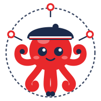

Octo
Snake
Le snake… mais avec une pieuvre !
🎨 Personnaliser
Arène
Roi du récif 👑
Océan 🌊
Le Gardien 🪣
Argominator 🦾
L'Argonaute
🐚
Aventure solo
Survie 🦀
Coop 1-4 joueurs
Encre & Sang 🃏
Cartes tactiques : campagne, escarmouche, duel
👪 Salle privée (famille, amis)
Mode
Arène
Roi du récif
Survie
Argominator
Le Gardien
Durée
1 min
2 min
3 min
5 min
Tank
Au hasard
Le n°1 du classement
Le dernier (revanche)
Joueurs max
2
3
4
5
6
7
8
Ajouter des bots
Niveau des bots
Faciles
Normaux
Difficiles
Créer et inviter
Rejoindre
Rejoindre
🔊
⚙️ Réglages
🎓 Tutoriel
📲 Installer l'appli
🛍 Boutique
🔒 Confidentialité
un jeu MajorTakito
🎨 Personnalisation
Enregistrer
Glouglou… perdu !
Rejouer
Menu
Fin de la manche
Rejouer
Menu
👪 Invite ta famille !
Partage ce code ou ce lien :
📨 Partager le lien
Copier
Jouer
🐙 Attrapé !
Encre
pour t'échapper
Encre
Attrape
🎬
⚙️
✕
PV
🎒
🎒 Inventaire
✕
💨
Charge
1
🌊
Onde d'encre
2
🐙
Prise
3
💀 Éliminé !
Encourage les survivants : nouvelle manche bientôt.
💀 À terre…
Encre
Attraper
Lent
🐙
🐙 Première plongée ?
Commencer
Passer
⚙️ Réglages
Fermer
🦀 Survie — choisis ta pieuvre
Durée des vagues
▶ Solo
👪 Coop
Retour
Prêt
👁
Rejouer
Menu